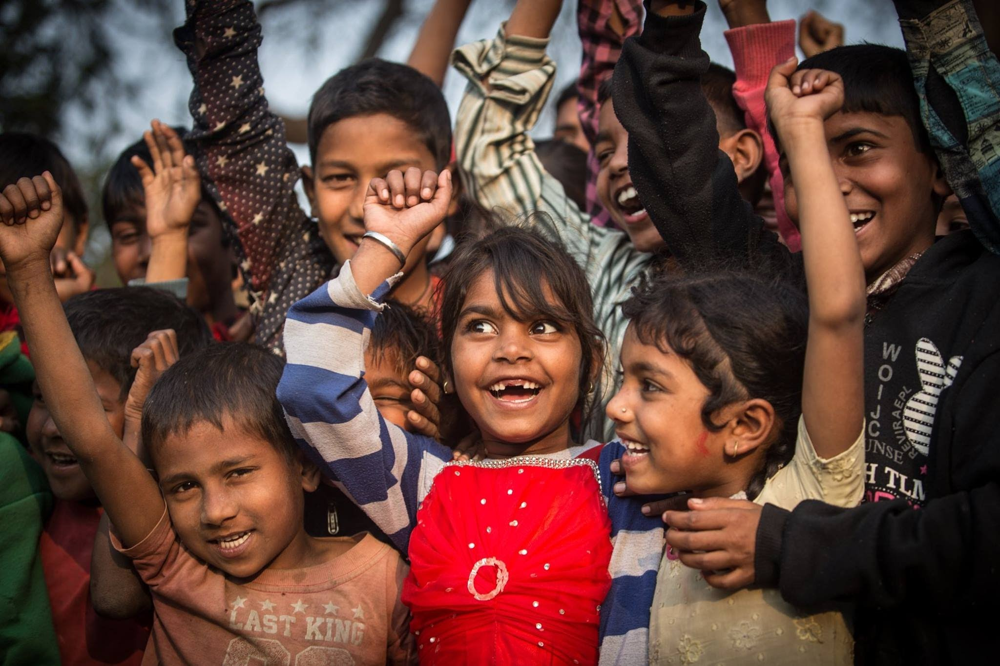

Sjef i eget liv er en ettårig utdanning for ungdom i alderen 13-19 år som har gått glipp av skolegang på grunn av fattigdom.
Målet er å gjøre ungdommene stolte og selvstendige, gi dem kunnskap om egne rettigheter og muligheten
til å tjene egne penger. Slik kan de unngå for tidlig ekteskap, tvangs- prostitusjon, overgrep og
utnytting
Sjef i eget liv
1. Dialog og problemanalyse
Ungdommene møtes ukentlig i grupper på 25-30, sammen med en veileder. De deltar først aktivt i å
kartlegge sin hverdag, analysere utfordringene de har og diskutere løsninger. Sammen med veilederen
lærer de om helse, hygiene, diskriminering, medgift, hiv/aids, barneekte- skap, tra cking, prostitusjon
og rettigheter.

2. Ferdigheter og deling
Deretter lærer de ferdigheter som problemløsning, beslut- ningstaking, kreativ tenkning, kommunikasjon,
selvbevissthet, empati, mestring av stress, lesing og skriving. En viktig del er også å spre
kunnskapen videre. Dette gjør de for familie og naboer, gjennom gatedrama og folkemøter.
3. Yrkesopplæring og sjef i eget liv
Til slutt får de en yrkesopp- læring, så de kan skape seg en jobb og tjene egne penger. Skredder,
frisør, jordbruk, dyre- oppdrett, håndverksfag, matlag- ing mm. Deretter får de hjelp til å
starte opp en liten virksomhet. Noen får et rentefritt lån, andre sparer og låner i grupper
til f.eks. et startsett med verktøy, symaskin, ei geit etc.
Laget av: